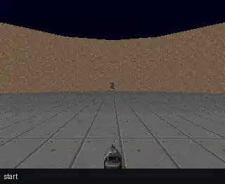

Four players take the same Doom levels through one harness: random moves, four hand-written rules, one Qwen agent, and a Qwen commander with two specialists. Every decision is a typed, validated tool call, every episode replays exactly, and the numbers below come only from those recordings.

The same unseen level (defend_the_center, seed 1000) played by each agent, replayed from its recorded button presses at 2× speed. The strip under each screen shows the decision being carried out. Score: tics survived, higher is better.
Both Qwen agents play far above the random floor, but neither beats the hand-written scripted agent, and the two-specialist team does not beat the single agent. basic is only a smoke test: every agent that eventually aims and shoots gets the same time.
| Scenario · median score, levels won | random | scripted | react_single | commander |
|---|---|---|---|---|
basictics to kill, lower is better | 60.5 9/10 | 58 10/10 | 58 10/10 | 58 10/10 |
defend_the_centertics survived, higher is better | 298.5 0/10 | 1,330.5 0/10 | 1,142 0/10 | 1,080 0/10 |
health_gathering_supremetics survived, higher is better | 544 0/10 | 1,586 2/10 | 1,244.5 2/10 | 1,029 1/10 |
The game waits between calls and every prompt already contains the current view, so the observe tool can never show anything new. Its description says so. The agents called it anyway: 663 of 3,369 decisions on the test levels, and about one in five on the dev levels too. Episodes that ran out of their call budget had spent a fifth of it here.
| Agent | observe calls | share | blind shots |
|---|---|---|---|
| react_single | 347 of 1,672 | 20.8% | 32 |
| commander | 316 of 1,697 | 18.6% | 4 |
An Analyst LLM read the counted failures and 11 corrected decisions and proposed three lessons for the single agent's prompt (policy v1). Offline it looked like a clear win. On five fresh validation levels it survived shorter on most of them: it stopped calling observe and started turning back and forth on the spot instead.
“Passes 7/11 corrections and cut observe 32 to 1, but survival fell on 4 of 5 seeds (median -36%); it traded observe for back-and-forth turning. Gate promoted on one extra success.”
The commander team on the same level: 24 mode choices, 23 switches between the Combat specialist (aim, shoot) and the Navigator (turn to look around), 24 kills, then its health ran out at tic 1,413. The router only asks the commander again when the situation changes; in between, the current specialist keeps going without an extra call.
uv run doomlab eval --split test # needs a Purdue GenAI Studio key uv run doomlab report # rebuilds every number on this page from the traces